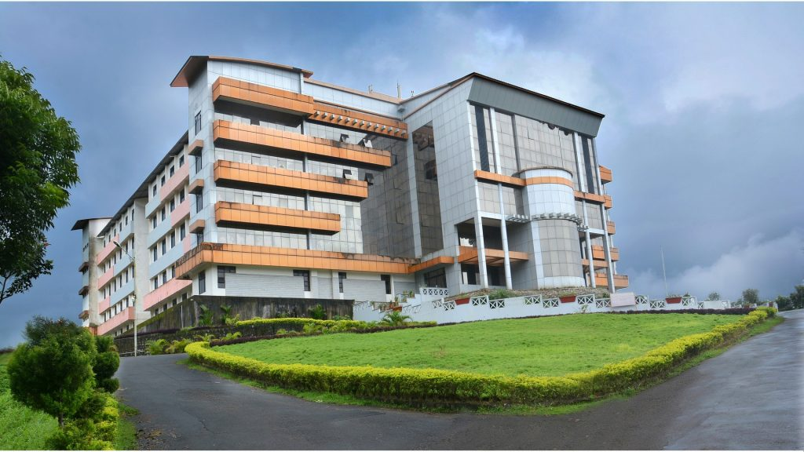

WELCOME TO
Shri Dharmasthala Manjunatheshwara
College of Engineering & Technology,
Dharwad
Shri Dharmasthala Manjunatheshwara College of Engineering & Technology, Dharwad was established in the year 1979 under the flagship of SDME Society and has grown into one of the nationally acclaimed premier engineering institutions in the country. The institution has been consistently rated high, ranking within 50, among the top private engineering colleges in the country.
About SDME Society Shri Dharmasthala Manjunatheshwara Educational [SDME] Society, Ujire® was established with the primary objective of making education accessible and affordable to rural youth. With the hallmarked vision of inculcating Value into Education, at present, it manages 56 educational institutions from Kindergarten to Doctoral Studies in the state of Karnataka in India. The institutions offer quality education in the fields of General, Law, Technical, Medical and Management Studies. These institutions ensure quality through updated skill sets and value based education. The SDME Society Trust Office is located at Ujire, which acts as the central functioning unit for all management actions for SDM Institutions. Dr. Satheeshchandra S, our distinguished Secretary currently heads the Society, under whose guidance the institutions have been functioning with renewed efficiency.
Dr. Ashok Kumar obtained BE in Electronics & Communication Engineering from MCE, Hassan, and ME in Digital Electronics from SDM College of Engg&Technology, Dharwad. In 2010, he was awarded Ph.D. from VTU under the guidance of Dr. Shivaprakash Koliwad, the Former HOD of E&C, MCE, Hassan and Dr.Dwarakish, HoD, Dept. of Applied Mechanics, NITK, Surathkal. He is into teaching for the past 30 years. Earlier he served KVG Engg. College, Sullia and PA College of Engineering Mangalore in the capacity of Lecturer, Asst. Prof., Professor and Head of the Dept. and Principal In-charge from 1989 to 2004. He served Vivekananda Engineering College, Puttur (DK) and PESITM, Shivamogga as Principal for about 14 years from 2004 to 2018. He has published over 15 research papers in National and International Conferences and Journals. One of his research scholars has been awarded Ph.D. under VTU in 2017, and he is currently guiding one Ph.D. scholar. Hobbies: Cartoon sketching, writing articles for magazines, Indian Classical Music and Photography.
About the college
SDM Institute of Technology is an ambition driven technological institution situated in Ujire within the homely ambiance of SDM Institutions and the serenity of the Western Ghats. Managed by SDM Educational Society Ujire under the impeccable leadership of Sri. D. Veerendra Heggade, the institution has thrived over the years in the areas of academics, innovation, and extracurricular activities. With more than 1500 students availing quality education every year, the college flaunts a testimony of over 2500 alumni who are exceptionally well placed in the society today. For the last 13 years, SDMIT has been successfully delivering the promise of education rooted in discipline and the holistic development of students.
A 70-acre oasis in North Karnataka, SDMCET, Dharwad with its impressive architecture, lush verdant woods and landscaped gardens, provides an idyllic environment to engage in technology, academics and learning. SDMCET has a world-class infrastructure that facilitates excellence in teaching, research, and other professional activities.
Literary Clubs The Reflection Team of SDMCET strives to hone the all-round talents of an individual who wishes to master the universal language – ENGLISH. It facilitates a variety of events that engage you as a listener and a participant. The club hosts literary events like what’s the good work, mock press, dumb charades, debates, ship wreck, Sansad Sangram(mock parliament) and a lot more events which serve as great platforms for the students of SDMCET to exhibit their written and speaking talents. It is responsible for nearly 15 activities in Insignia every year. Team Reflections possesses the seriousness associated with a literature club however it also possesses the fun, energy and enthusiasm associated with any college club.